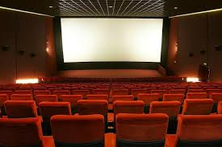

MOVIES!

!!!!!!!!!!!!!!!!!!!!!! SLAY !!!!!!!!!!!!!!!!!!!!!
I want my final to center around film. In other words, I want to create a film database of sorts. Beyond that, however, its still quite a bit fuzzy. The following are potential databases Im interested in curating: queer films, Asian American films, films that are pre-Hays codes (a series of censorship guidelines imposed by the MPAA during the 1920s) or that subvert the codes during their reign, or some other type of catalog I have yet to think of. In any case, I want to create a reference in p5.js that serves to highlight under-told stories.
As I said earlier, I am still quite uncertain about which direction I want to take this project. I do want to make sure the user can filter by genre / intended emotional experience / average rating and that it is intended to be an homage to the independent film world. I want this to be an accessible form of media, one that appeals to those who dont necessarily fall into the direct target audience these films intend on reaching.
In terms of execution, I know I will need a pretty artful layout to make it enticing. However, I am also confused about the parameters of the final (i.e. how to use 1,000 sources). Given the nature of my project, I am uncertain that there will be enough places to pull from to meet this section of the criteria. I can always access archives, but I dont know how to facilitate the process of screening for 1,000 sources. I am also unsteady with website creation at large, at least the kind we most recently used in class (html and the offline coding in Visual Studio Code).
In any case, my final will function as a pipeline that connects the curious average joe to a vast world of storytelling. It will serve as a reference point to the artform I love and relate to most. It will be casual and functional but also dazzling, and I hope I can create a code that can adequately replicate this.
hooray!
!! movies make the world go round !!